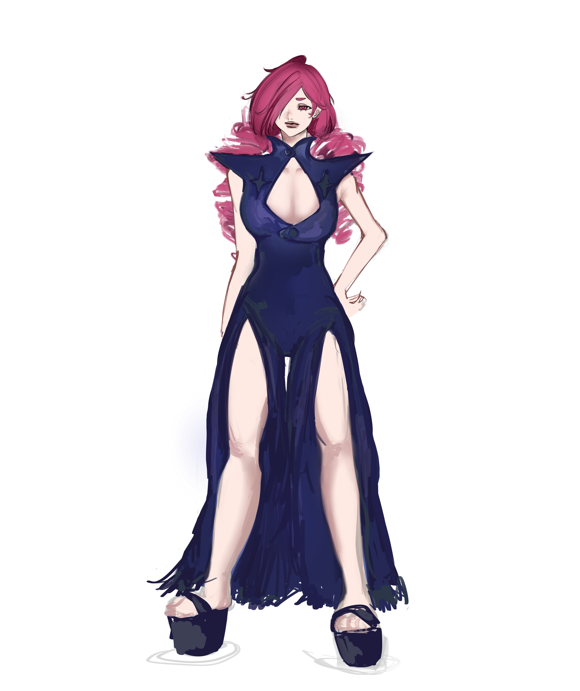
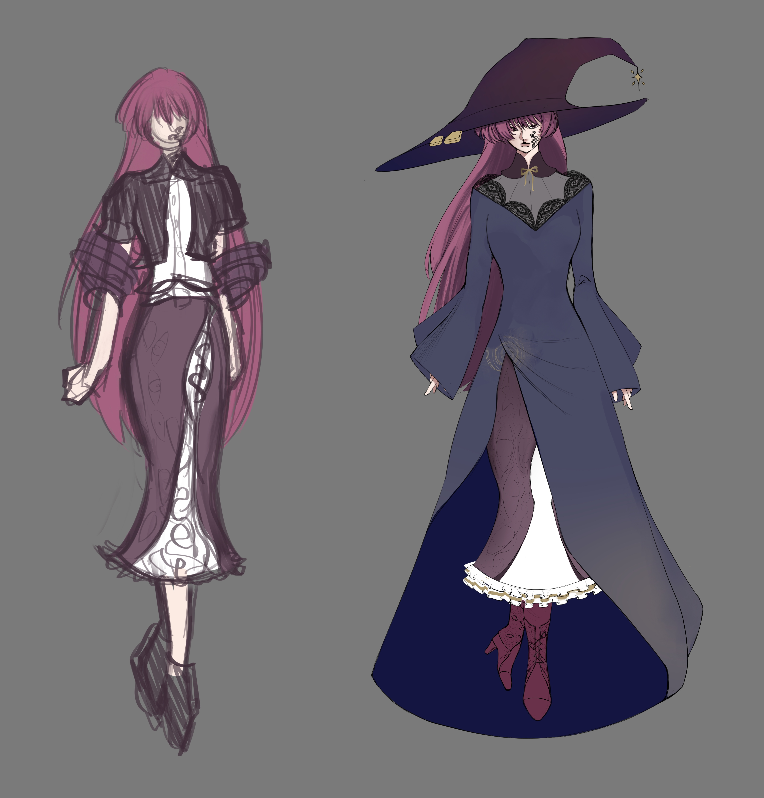
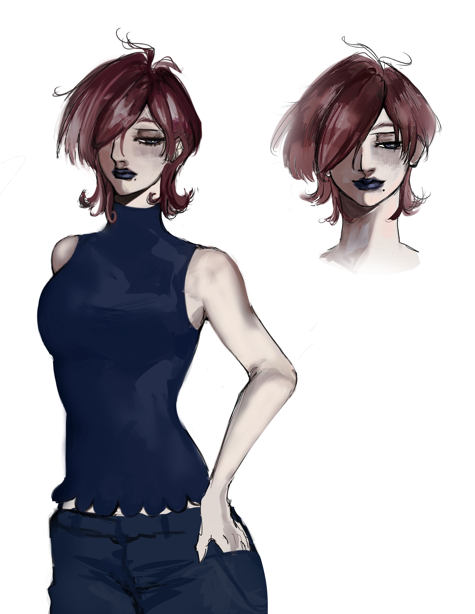

Nahk Ma-Zoo (Mazoo)
Le personnage de Nahk Mazoo reste assez simpliste dans son design. Elle est la grande sœur de Mazoo et la sorcière de la Chance. Elle fait preuve d'une confiance en elle assez imposante que j'ai essayé de retranscrire dans son design avec sa tenue de scène.

Nahk Dara-Zoo (La sorcière de l'Amour)
Darazoo est la jeune sœur de Mazoo. Si elle doit suivre le chemin du pilier du Destin et incarner le Hasard, elle souhaite plus que tout être le pilier de l'Amour. Mais en allant à l'encontre de son destin, elle voit une marque maudite s'étendre sur sa peau. Darazoo est beaucoup plus froide que Mazoo, j'ai essayé de créer un contraste entre les deux avec un choix de couleurs plus terne pour la tenue de Darazoo.

"Rosalyna"
Le personnage de Rosalyna ne m'est venu à l'esprit que récemment. Elle n'a pas encore d'histoire écrite ou de place définie dans le sénario ...